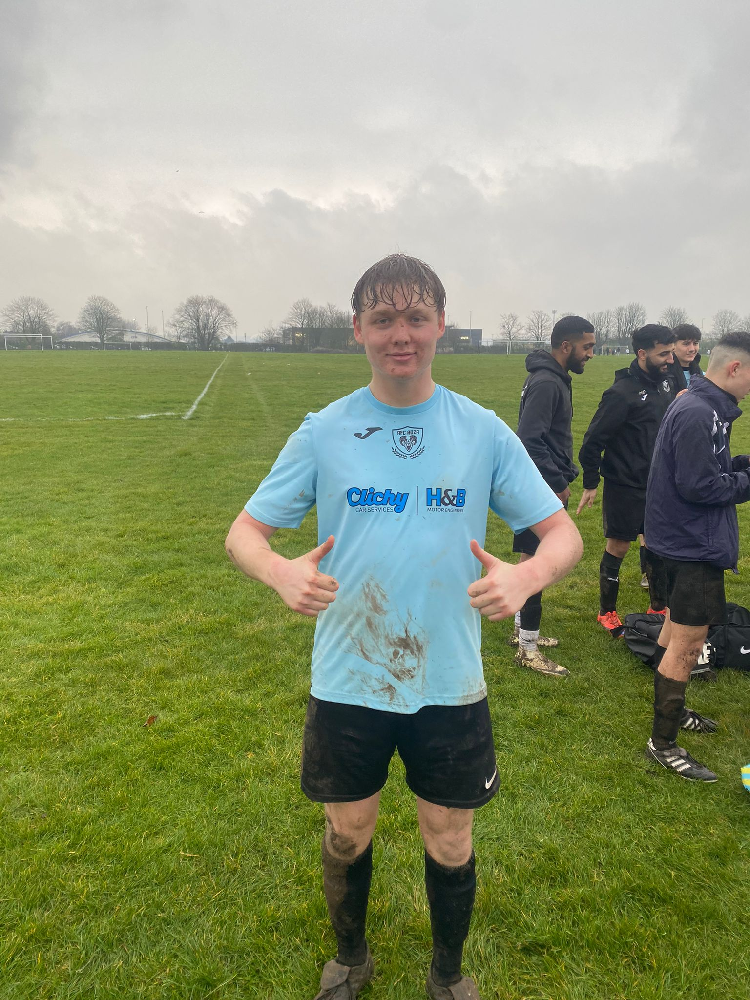

Match Report - Continental (A)
After two unfortunate results, where Roza harshly lost by one goal on consecutive occasions, Sunday was a test of mental strength as well as footballing quality for the boys - as we faced FC Continental. It was to be played on a muddy, wet Enfield Playing Fields; and with three games left of the season going into this one, the points on offer were extremely valuable ones.
Starting XI: Nicholas Christou; Deano Spyrou, Giorgio Koullas, Jake Koumi, Rees Colgan; Michael Georgiades, Saj Rajaratnam, Danny Smith; Ben Reynolds, Steph Savva, Alex Andreou
In a start to the game that matched the conditions well, it began as a sticky, awkward game for both teams. There were few significant chances and the treacherous conditions meant it was hard to pass the ball around as Roza love to do.
It was around the 18th minute when Michael Georgiades unstuck the away side from an awkward beginning. Georgiades, not a man often known for his goals, dug out a sensational strike from around 25 yards. Not only was it hit with power, but the accuracy was second to none, dropping right in the top corner to put Roza one to the good. Michael’s performances have deserved a goal and this was definitely one to remember.
Soon after, the Danny Smith show commenced. Roza’s ever-consistent midfielder first reacted to a rebound to double Roza’s lead, before persistently pressing the opposition defence to make it 0-3. At this point, it was clear to see that Roza were winning the mental battle; we were looking confident, whilst it was clear to see Continental heads beginning to drop, with anger aplenty in the home side’s ranks.
Ben Reynolds was next to get in on the act, and it was a gorgeous one at that. When Saj Rajaratnam threaded him through down the right, he evaded one challenge before executing an outrageously accurate chip. Roza were scoring for fun, and the goals were of noticeably high quality.
With just a few minutes to play until half-time, Continental pulled one back from the penalty spot. In two games this season against Roza, Conti scored three goals - all of which coming from penalties.
As we went into half-time at 4-1, the message was clear: not to take our foot off the gas. The challenge set to the boys was to win the second half, something which had not been achieved by Roza in the previous two games.
The first twenty minutes of the second half were similar to the first twenty of the first - not many chances, and lots of tackles flying in.
As Roza substitute began to enter the fray, we enjoyed increased control, helped by numerous fresh legs. Alex Andreou finished from close range to make it 1-5 to Roza, and then Man of the Match Danny Smith completed his hat trick with an unbelievable goal. He went past one, outmuscled another and then nutmegged a third before a deft chip into the top of the net. In a game of unbelievable Roza goals, this may just have been the pick of the lot, from a player who was head and shoulders above everyone else on the field. Last year’s Management Player of the Season, Smith deservedly won his first Man of the Match with two games to go this season.

With 5 minutes to play and the result in the bag, it was another Andreou - Michael Andreou - who added the cherry on top of the cake. Rajaratnam’s header struck the bar and Andreou was jolly on the spot to finish off the rebound.
1-7 was the scoreline, and this performance encapsulated how far we have come as a team.
Two more to go. Up the Rose!